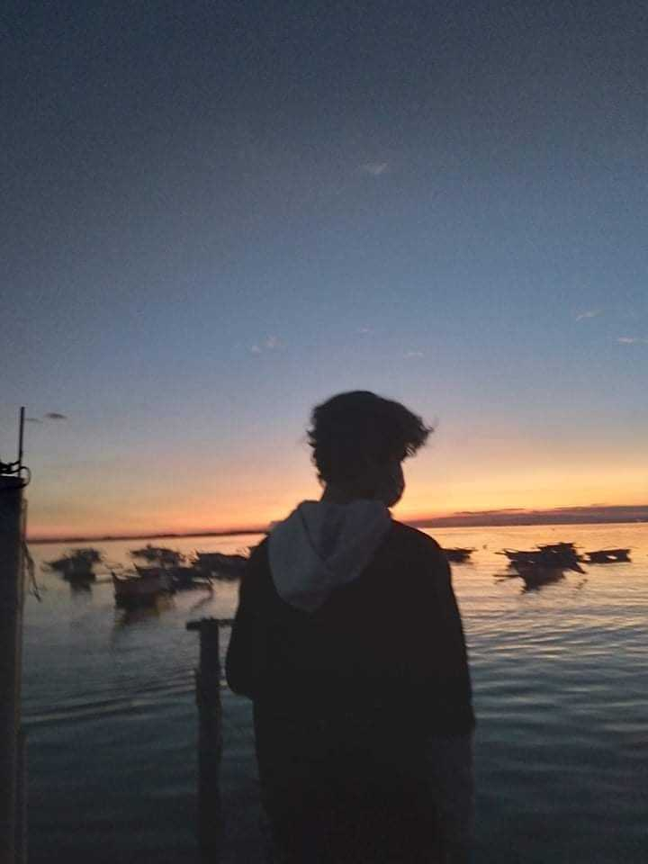

WHISPERS OF THE WILDERNESS: EXPLORING THE BEAUTY OF NATURE..
Nature, with its untamed splendor and ageless wisdom, beckons us into the heart
of the wilderness, where every rustle of leaves and murmur of a stream speaks volumes
about the beauty that thrives in its unspoiled realms. In this essay, we embark on a
journey into the depths of nature's sanctuary, exploring the profound beauty that lies
hidden in the whispers of the wilderness. In the wilderness, silence is not empty but
with the secrets of the natural world. As we delve into the heart of the wilderness,
the absence of human clamor reveals a symphony of whispers—a tranquil dialogue between the wind,
the leaves, and the creatures that call this sacred space home. In this silence, nature unveils
its most profound beauty. Beyond the flora, the wilderness is a realm inhabited by a diverse
array of creatures. From the majestic eagle soaring in the sky to the elusive creatures that
roam the forest floor, each contributes to the enchanting mosaic of life. Exploring the beauty
of nature in the wilderness entails understanding the delicate balance that exists between
predator and prey, and the symbiotic relationships that thrive in this intricate ecosystem.

GOLDEN EMBRACE: THE SEA'S SYMPHONY IN HOUR OF RADIANCE..
As the sun begins its descent towards the horizon, casting a warm,
golden glow upon the world, a magical transformation takes place at the
meeting point of earth and sea. This essay delves into the enchanting phenomenon
known as the "golden hour" and explores the mesmerizing symphony that unfolds
as the sea embraces the radiance of this ethereal moment. The golden hour,
that fleeting interval just before sunset, unveils a prelude to twilight,
casting the sea in a resplendent golden hue. The waves, touched by the sun's
parting kiss, shimmer with an otherworldly brilliance, as if the ocean itself
is preparing to share its most enchanting secrets. As the sun hovers above the
horizon, the sea becomes a mirror, reflecting the celestial ballet above.
The clouds, tinged with shades of pink and orange, cast their reflections upon
the calm waters, creating a mesmerizing dance between the elements that blurs
the boundaries between sea and sky.
EPHEMERAL SPLENDOR: THE BALLET OF COLORS IN A CLOUD-ADORNED SUNRISE..
In the quiet theater of dawn, nature orchestrates a breathtaking spectacle a sunrise
adorned with a canvas of clouds, where hues of dawn pirouette across the sky in a ballet
of colors. This essay embarks on a poetic journey into the ephemeral splendor of a sunrise,
exploring the magical dance that unfolds when the sun and clouds collaborate to paint the morning sky.
As the night recedes, the world holds its breath in anticipation. The prelude of dawn commences, casting
a gentle glow on the horizon. The clouds, like celestial dancers awaiting their cue, gather to participate
in the grand ballet of colors that is about to unfold. The sky, now an expansive stage, witnesses the
performance of dawn's ballet. Soft pinks pirouette with gentle oranges, while the blues waltz with the golds.
The clouds, caught in this symphony of colors, blush and glow, as if inspired by the celestial choreography.
SERENITY BY THE SHORE: EMBRACING THE BEAUTY OF THE RELAXING SEA..
The rhythmic lull of waves, the caress of a gentle breeze, and the panoramic expanse of the horizon
the sea has long been an ambassador of tranquility. This essay invites you to explore the soothing
embrace of the relaxing sea, where the ebb and flow of the tides become a therapeutic symphony that
transcends the chaos of daily life. As you stand by the shore, the sea unveils its first gift
the gentle lullaby of waves. Each wave, a rhythmic breath of the ocean, serenades the shore with
a calming melody. The repetitive dance of water meeting land becomes a soothing mantra, inviting
you to release the tension of the world and immerse yourself in the tranquility of the moment.
The relaxing sea is not merely a visual feast but a playground for all the senses. The scent of
salt in the air, the touch of soft sand beneath your feet, and the distant cries of seagulls create
a multisensory experience. In this sanctuary, every inhalation is an invitation to exhale the stresses of life.
Walking along the shore leaves behind a trail of footprints a tangible reminder of our fleeting presence in
the grandeur of nature. The relaxing sea, with its timeless waves, becomes a silent witness to the transient
nature of our worries, inviting us to embrace the present and let our concerns be carried away by the tides.
Comments